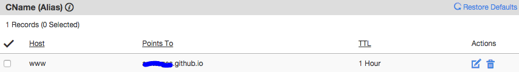
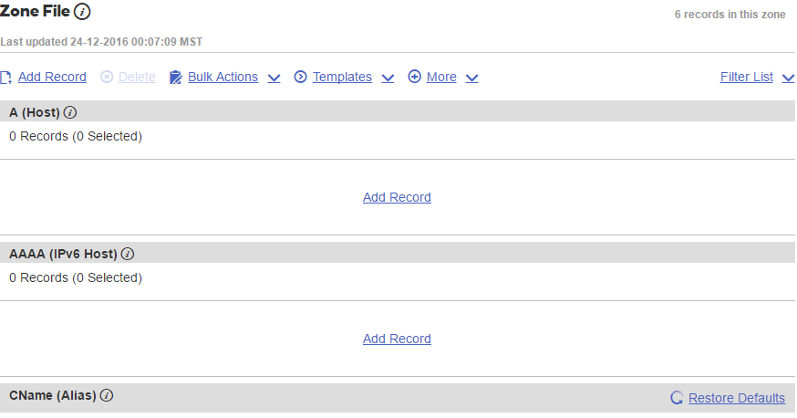
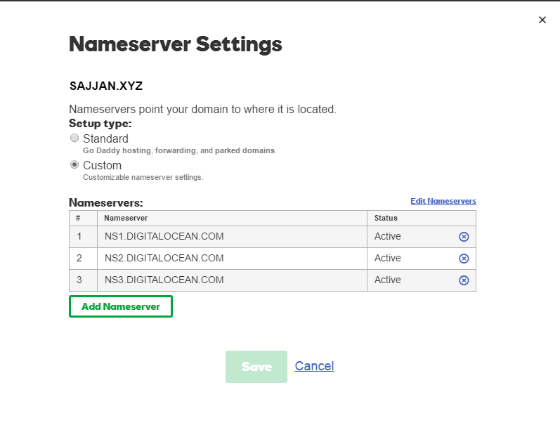
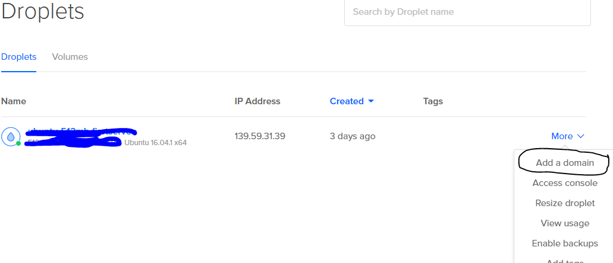
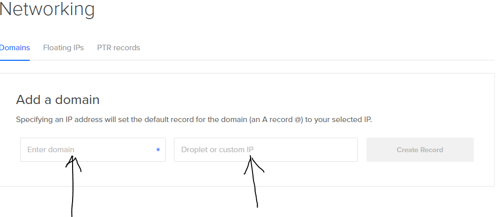

Domain name configuration from Github to digital-Ocean
Github is a good place to starting out things. Writing some basic code and putting it on github and checking that on a default URL is pretty cool. The default URL can be changed into a domain name.
When I started my blog, I used Github as a hosting provider. you know you can use it for free using public repository or if you are a student. But Letter I moved to some other hosting provider. Now the major issue was how to configure the domain name setting from github to digital ocean (I chose that). There was a lot of article about how to setup a domain name with digital ocean but none of then describe what to do if you're moving from github.
Now Let's check what are the issues and how I solved them. First when you configure a domain name with github, you have to do some configuration like, we have to enter two ip addresses into A record and a CNAME file has to be added which have value equal to your github profile url.
I have a apex domain(no www, sometime called root domain or naked domain) so have to configure an ALIAS and A record with my DNS provider.
A record for github :-
While create an A record for github, We have to specify a single IP address that looks like this:-


some time you have to put 2 IP addresses where additional IP address would be 192.30.252.154.

This is explained here on github-help tips-for-configuring-an-a-record-with-your-dns-provider
and A CNAME(alias) record that looks like this ...

This is my godaddy account's DNS setting for github pages. Now I move from github to Digital ocean. So I have to reconfigure my DNS settings. At first I was terrified that how I would configure this all again. Their are many question are going into my head like setting up a A record, Changing alias record(how?). I have an IP address but don't know how to setup them plus the guideline to configure DNS setting on digital ocean is bit confusing if you are moving from github. In this case I used the below approach that helped me. I hope it would be helpful for you.
First I erase all the record from DNS setting. It was empty as for new domain. it looks like below:-

Now find the fields called "Domain Name Server".

Point your name servers to digitalOcean and fill in three domain Name Server fields. Once done, save your changes and exit.
The DigitalOcean Domain servers are:-
- ns1.digitalocean.com
- ns2.digitalocean.com
- ns3.digitalocean.com
After setting up above values it looks like below :

Now go back to digital ocean account, select a droplet for which you want to add your domain name and click on "add a domain" as below.

A new page will opened put your domain name and droplet IP and click on "create record". And you are done.

These change may take some time to be effective. you can test your new domain by pinging it.
ping website_name
it response would be like this :
pinging website_name [IP Address(Droplet)] with 32 byte of data.
That's it. Something Unanswered,Comment below.
Published On : 2017-01-03 Tweet